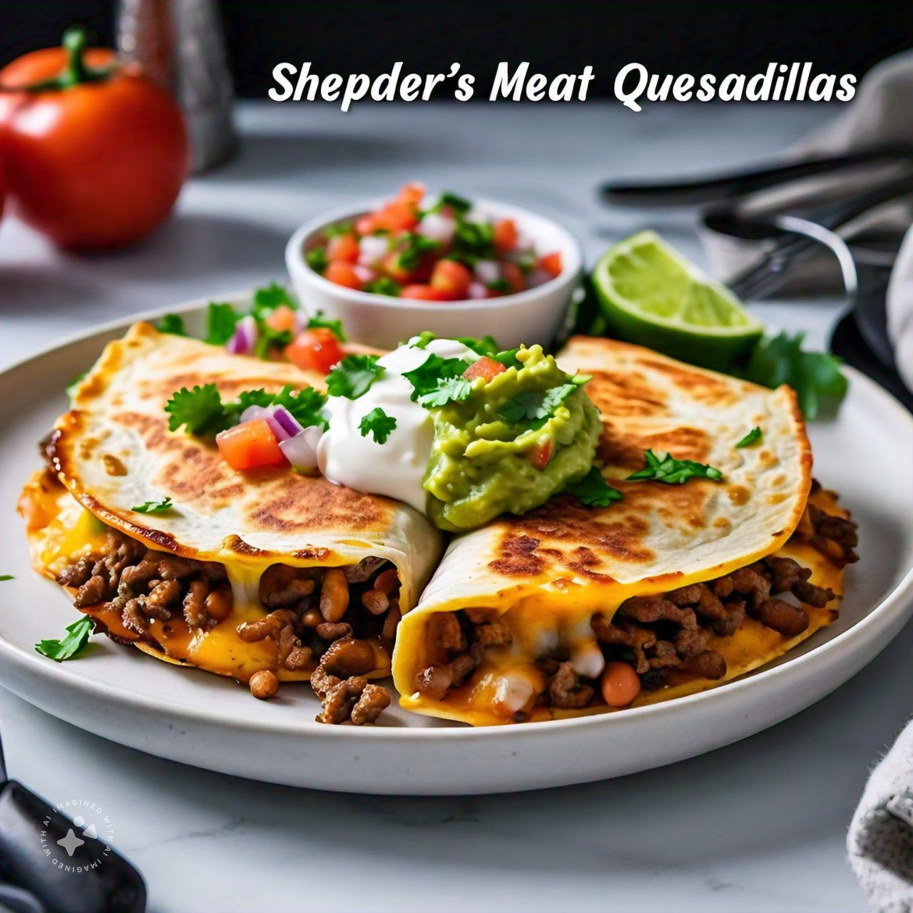
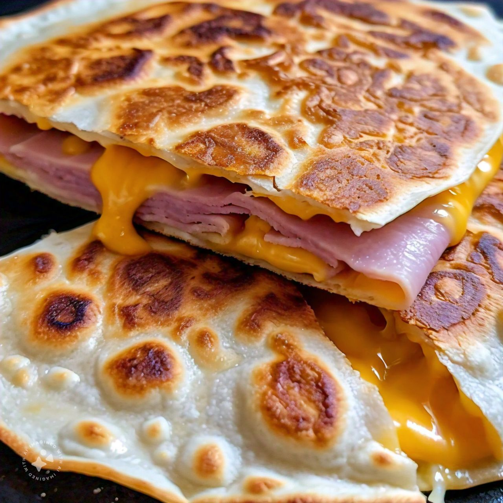

Quesadilla de Asada con GuacamoleQuesillo con carne asada cortada en trocitos, con tomate, cebolla, cilantro, y orden de guacamole  |
Quesadilla de Champiñones con GuacamoleQuesillo con Champiñones cocinados, con tomate, cebolla, cilantro, y orden de guacamole, con piña opcional 
|
Quesadilla de CarneQuesillo con Carne de Bistek o Molida, alpastor, cerdo, con tomate, cebolla, cilantro 
|
Quesadilla Con huevoQuesillo con 1-2 huevo cocinados al gusto, con tomate, cebolla, cilantro 
|
Quesadilla con jamónQuesillo con jamón de pavo o cerdo, con queso amarillo, con tomate, cebolla, cilantro  |
Quesadilla con SalchichaQuesillo con Salachicha italiana de Pavo o cerdo, con tomate, cebolla, cilantro, y orden de guacamole |